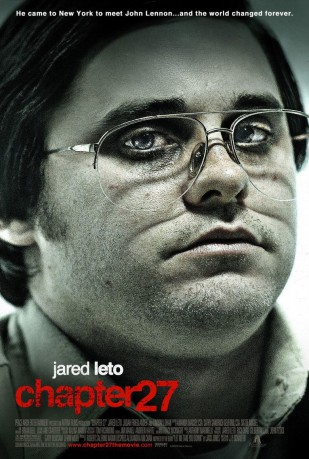
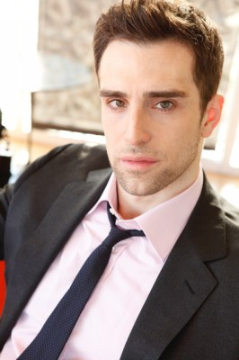
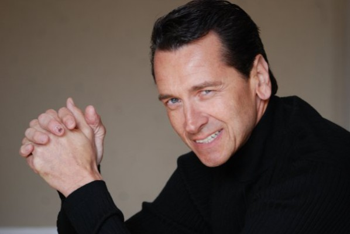
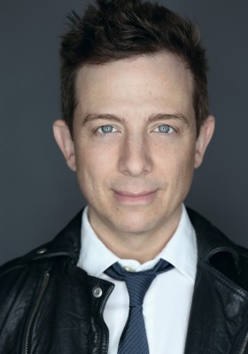

#5674 Chapter 27 - Die Ermordung des John Lennon
Alternativ: Chapter 27
 
 IMDB-Wertung: 5.8 / 10
IMDB-Wertung: 5.8 / 10  Metascore: 0
Metascore: 0 
Der Film zeigt die unmittelbare Vorgeschichte des Mordes an John Lennon. Dazu wird konkret das Leben des Mörders Chapman in den letzten drei Tagen zuvor geschildert; wie er mit einem Flugzeug aus Hawaii kommt, zuerst in einer Herberge der YMCA wohnt und später in ein Hotel zieht. Die meiste Zeit verbringt er in der Nähe des Gebäudes, in dem Lennon wohnt.
Jahr: 2007
Dauer: 85 Minuten
FSK:
Land: USA Studio: Vitagraph FilmsTonspuren:
Untertitel: Deutsch,
Auflösung: 720p (1280x720) Größe: 3358 MB
Genre: Drama, Krimi, Geschichte, Biographie
Regisseur: J.P. Schaefer
Drehbuch: Joe Gayton
Soundtrack:
Darsteller:
- Chuck Cooper als Cabbie
 Victor Verhaeghe als Cop #1
Victor Verhaeghe als Cop #1 Lindsay Lohan als Jude
Lindsay Lohan als Jude- Ursula Abbott als Jeri
 Roy Milton Davis als Homeless Man
Roy Milton Davis als Homeless Man- Adam Scarimbolo als Clerk Riley
- Molly Griffith als Centerfold Model
- Jeane Fournier als Prostitute
 Kate Higgins als Gloria
Kate Higgins als Gloria- Matthew Nardozzi als Little Kid
- Brian O'Neill als Patrick
- Matthew Humphreys als Frederic
 Judah Friedlander als Paul
Judah Friedlander als Paul Jaime Tirelli als José
Jaime Tirelli als José-  Michael Sirow als Joseph
- Mariko Takai als Yoko Ono
-  Mark Lindsay Chapman als John Lennon
 Jared Leto als Mark David Chapman
Jared Leto als Mark David Chapman- Laura Lynn Berrios als School Teacher , uncredited
 Kevin Cannon als Precision Driver / Street Hood , uncredited
Kevin Cannon als Precision Driver / Street Hood , uncredited Bill Chemerka als Neighborhood Resident , uncredited
Bill Chemerka als Neighborhood Resident , uncredited Dennis Jay Funny als Lennon Groupie , uncredited
Dennis Jay Funny als Lennon Groupie , uncredited Sergio Kato als Waiter , uncredited
Sergio Kato als Waiter , uncredited- Lisa Marie Palmieri als Waitress , uncredited
-  Jeff Skowron als Waiter , uncredited
- Robert Gerard Larkin als Cop #2
- Brian Bell als Cabbie#2
- Dan Schultz als Steve
- Spiro Malas als Elevator Man
- Le Clanché du Rand als Helen
- Yuuki Hosokawa als Sean Lennon
- George Bryant II als Limo Driver , uncredited
- Melissa Demyan als Lennon Groupie , uncredited
- Vivian Kalinov als John Lennon Enthusiast , uncredited
- Redman Maxfield als Maitre D' , uncredited
- Vincent James Russo als Jose's Stand-in , uncredited
- Nicki Sixteen als Pedestrian , uncredited
- Joey Sontz als Lennon Band Manager , uncredited
Datei: X:\2007(A-F)\Chapter 27 - Die Ermordung des John Lennon (2007, FSK, 1280x720).mkv seit 09.03.2017
Festplatte: HD 2007(A-Z)-2008(A-F)
 Es gibt insgesamt 65 Filme in der Gruppe '2007(A-F)'
Es gibt insgesamt 65 Filme in der Gruppe '2007(A-F)'